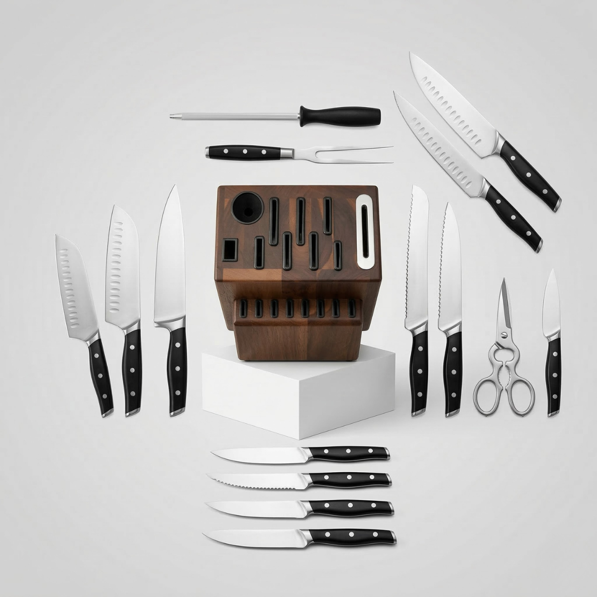

Juegos principalesCuchillos Serie Precisión 3
- Incluye los juegos principales de la línea para una cocina más completa
- Reúne opciones para chef, trinchar y cortes orientados a carne
- Ideal para quienes buscan una colección base con presencia profesional